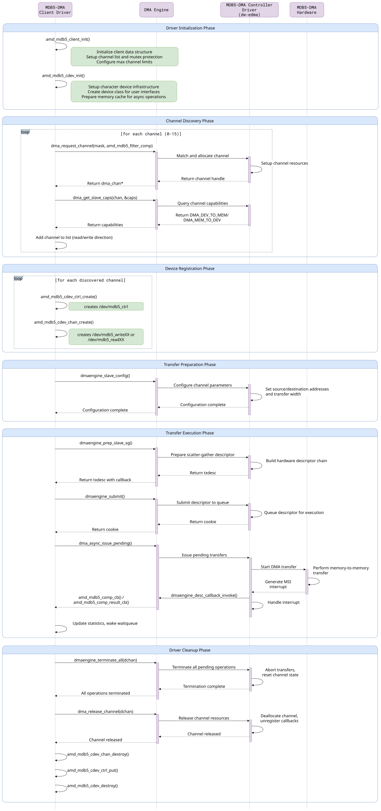

Driver Overview
The MDB5 DMA architecture is built from two distinct kernel-space drivers that work together:
Controller Driver (
dw-edma) - A kernel-space driver that directly manages the DMA controller hardware.Client Driver (MDB5 DMA client driver) - Client driver provides a glue-logic between the controller driver (dw-edma) and the user-space applications.
The MDB5 DMA client driver interfaces with dw-edma controller driver using the dmaengine API. This API abstracts hardware-specific details, enabling the MDB5 DMA client driver to focus on managing DMA transactions and configurations for user-space applications through character device interfaces.
Controller Driver (dw-edma)
The controller driver is a kernel module responsible for probing the PCIe device, configuring it, and registering callbacks and channels with the DMA engine framework. Since the DMA engine framework exposes its mechanisms within the kernel, a separate kernel module is necessary to utilize the DMA functionality provided by the DMA controller.
Key characteristics of the controller driver:
Kernel-space hardware abstraction
Direct interaction with DMA hardware registers and interrupts
Manages up to 16 independent DMA channels (8 read and 8 write)
Implements Link List and non-Link List transfer modes at hardware level
Designed for PCIe endpoint devices
Exposes functionality only through Linux DMAEngine framework APIs
Details about the controller driver are beyond the scope of this document. However, the source code can be accessed at the provided link.
Client Driver
The MDB5 DMA client driver is a kernel-space driver that acts as a glue-logic between user-space applications and the kernel-space controller driver (dw-edma). It exposes a character device interface, allowing applications to manage DMA channels and initiate data transfers without needing to interact directly with kernel APIs.
Key characteristics of the client driver:
Kernel-space driver that provides user-space interface
Exposes character device nodes in
/devfilesystemDiscovers and registers available DMA channels from the controller driver
Handles up to 8 read channels and 8 write channels
Creates
/dev/mdb5_ctrl,/dev/mdb5_read<NN>, and/dev/mdb5_write<NN>device nodesSupports multiple transfer modes. It also supports synchronous and asynchronous operations mode of DMA operations.
Handles configuration requests, transfer submissions, and completion notifications while abstracting hardware and kernel complexities from user-space applications
Client Driver Interface
The client driver provides user-space access through a well-defined character device interface that abstracts the complexity of kernel DMA operations. Applications interact with the driver through standard file operations (open, read, write, ioctl, close) on specialized device nodes created in the /dev filesystem.
The interface consists of three types of device nodes, each serving a specific purpose:
Control node:
/dev/mdb5_ctrlCentralized configuration and management interface
Provides system-wide DMA controller status and capabilities
Enables runtime configuration of transfer modes and parameters
Supports channel statistics retrieval and system diagnostics
Read channel nodes:
/dev/mdb5_read<NN>Used for Card-to-Host (C2H) data transfer
Each node represents an independent DMA read channel
Supports both blocking (synchronous) and non-blocking (asynchronous) transfer modes
Write channel nodes:
/dev/mdb5_write<NN>Used for Host-to-Card (H2C) data transfer
Each node represents an independent DMA write channel
Supports both blocking (synchronous) and non-blocking (asynchronous) transfer modes
Client Driver Transfer Modes
The client driver supports two transfer modes that correspond to different hardware operation modes:
Scatter-Gather (Linked-list) Mode
Handles multiple buffers in a single transfer operation.
Creates a chain of descriptors linked together via pointers.
Best suited for large transfers, non-contiguous memory buffers, and multiple small transfers.
Also referred to as “Linked List Mode” in hardware documentation, where the descriptor chain is implemented as a linked list.
Simple (Non Linked-list) Mode
Handles single, contiguous buffer transfers.
Uses a single descriptor per transfer.
Best suited for large contiguous buffers where reduced setup overhead is beneficial.
Client Driver Supported Operations
Control Node Operations:
Configure aperture size for Scatter-Gather (Linked-list) Mode
Retrieve channel statistics (transfer counts, success/failure rates, data processed)
Set and query DMA transfer modes
Query current aperture size settings
Channel Node Operations:
Perform synchronous and asynchronous read/write operations
Transfer data between host memory and device memory
Transfer data using Simple (Non Linked-list) Mode and Scatter-Gather (Linked-list) Mode
Client Driver Installation Requirements
The client driver requires the following user inputs on the command line during insmod:
device_dbdf: This is the domain, bus, device and function ID of the PCIe endpoint in the format as following:
device_dbdf="DOMA:BB:DD.F"
dma_dev_id: This is the unique ID with which DMAEngine has registered the DMA Channels and can be found at the following path:
/sys/devices/<pci-bridge>/<DOMA:BB:DD.F>/dma/dma<ID>chan<NUM>
Client Driver and Controller Driver Interaction workflow
Below is a sequence diagram illustrating the communication between the MDB5 DMA client driver and the controller driver (dw-edma) during a typical DMA transfer.
